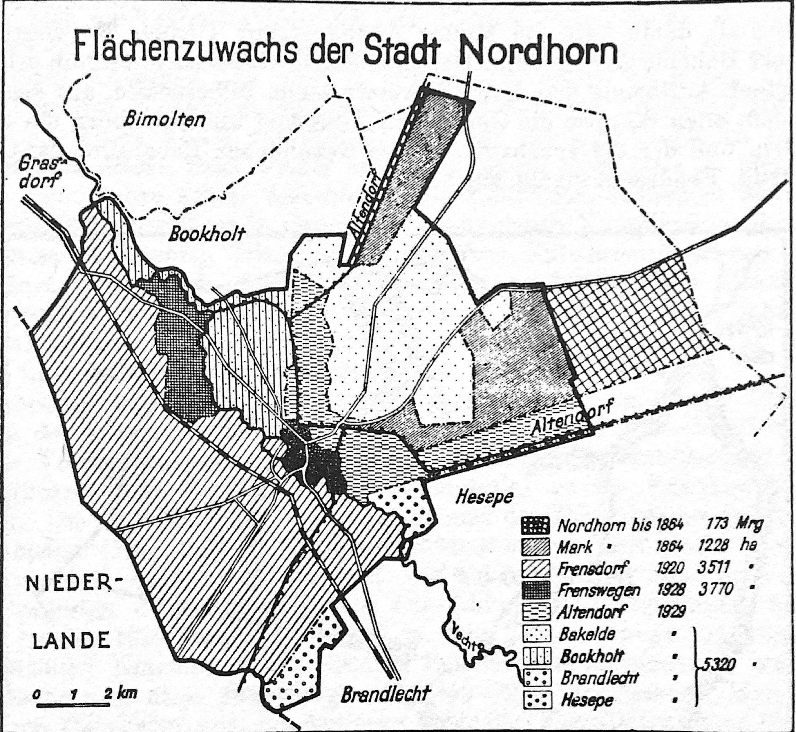

Nordhorn vor den 1920er Jahren
Nordhorn befindet sich seit 1839, welches als Gründungsjahr für die Nordhorner Textilindustrie gilt, in einem Aufschwung. Unter anderen siedeln sich Textilunternehmen wie Kistemaker und Schlieper, L. Povel und Co sowie Niehues und Dütting im benachbarten Frensdorf an. Diese wirtschaftliche Entwicklung ist auch in Nordhorn gut zu spüren: Immer mehr Arbeiter und ein wirtschaftstarkes Frensdorf bringen Wohlstand in die Region. Vieles ändert sich dann mit Beginn des Ersten Weltkrieges, der viele Probleme mit sich bringt. Die Kriegszeit in Nordhorn beginnt mit dem Mobilmachungsbefehl, den Bürgermeister Ernst Beins am 1. August 1914 von Oberleutnant Brück entgegennimmt. Ende August 1914 erreichen erste Flüchtlinge aus Ostpreußen Nordhorn, wo sie herzlich empfangen werden. Durch sich häufende Trauermeldungen in der Zeitung und die Entscheidung der Heerverwaltung das Klub- und das Krankenhaus in Feldlazarette umzuwandeln, macht sich in Nordhorn das Elend des Krieges langsam bemerkbar. Dieses Elend verschärft sich mit den ersten Einschränkungen Ende Januar 1915. Nach der Beschlagnahmung von Getreide folgt am 1. März die Einführung der Brotkarte. Durch Mangel an Waren und Abnehmern geht auch die Entwicklung der Textilindustrie zurück. Daraus folgt, dass niederländische Arbeitskräfte zurück in die Niederlande ziehen und die Arbeitskräfte aus Nordhorn deutlich weniger Arbeit haben und somit weniger Lohn erhalten. Aufgrund dessen verteilen Suppenküchen der Textilfirmen und der Gemeinden Altendorf und Frensdorf, warme Mahlzeiten an die Jugend und bedürftige Ältere. Eine weitere Einschränkung, die Nordhorn aufgrund der Grenznähe trifft, ist, dass Post aus Spionagegefahr nur über die Postüberwachungsstelle in Bentheim geschickt werden kann. Als dann noch die Hungerblockade Großbritanniens hinzukommt, erliegt die Bautätigkeit komplett. Auf den Feldern helfen Frauen sowie russische und belgische Gefangene bei der Ernte. Diese werden aber aufgrund der Grenznähe schnell durch Landsturmleute ersetzt. Im Herbst 1915 sind in Nordhorn erste Klagen über den Wertverlust der Mark zu hören. Diese ist zu diesem Zeitpunkt in Denekamp nur noch 50 Cent wert. Mit der Aufhebung des Zollschutzgesetzes scheint erste Erleichterung zu kommen: Es werden Waren aus den Niederlanden über Nordhorn nach Osnabrück und Bremen geschafft. Die Erleichterung hält aber nicht lang, da die Warenausfuhr aus den Niederlanden schnell von niederländischer Seite gesperrt wird. Damit einhergehend blüht der Schmuggelhandel in Nordhorn und Umgebung auf. Durch die immer knapper werdenden Waren und den anhaltenden Krieg steigt die Not in Nordhorn stark an. So werden in Nordhorn und Umgebung Ersatzmaterialien für nicht mehr erhältliche Waren selbst herangeschafft, unter anderem Besenheide aus der Bakelder Mark für Futtermehl und Binsen für Schlafsäcke der Soldaten. Man benutzt Karbid statt Petroleum, Drahtspulen und Wagenseile für beschlagnahmte Fahrradgummireifen. Im Winter 1917 steigt der Mangel an Kohlen und Kartoffeln, stattdessen werden in Nordhorn Pilze gesammelt und Torf gestochen. Zum schweren Leben in Kriegszeiten kommen starke Hochwasser und eine bösartige Grippe im Jahr 1918.
Eingemeindungen in Nordhorn
Der Wunsch nach Eingemeindungen der umliegenden Gemeinden entsteht schon früh. Die Stadt Nordhorn liegt zentral im Kreis Grafschaft Bentheim, hat somit eine gute Lage, ist aber durch die Vechte begrenzt. Dass im Zuge der Ansiedlung der Textilindustrie der Bevölkerungszuwachs immer größer wird, lässt den Wunsch nach Eingemeindungen lauter werden. Doch die umliegenden Gemeinden sträuben sich aus Angst vor Souveränitätsverlust. 1921 ist es dann so weit und Frensdorf wird als erste Gemeinde Nordhorn angegliedert. Nach vielen gescheiterten Verhandlungen folgen 1929 die Eingemeindungen von ganz Altendorf, Bookholt ohne einen Teil jenseits des Kanals, fast ganz Bakelde, der frühere Gutsbezirk Frenswegen sowie Teile von Brandlecht und Hesepe. Nordhorn wächst mit diesen Eingemeindungen auf eine Fläche von 7786ha und eine Einwohnerzahl von ca. 16000 Menschen.
Definition Eingemeindungen
Unter einer Eingemeindung versteht man die Angliederung einer vorher souveränen Gemeinde an eine größere Gemeinde oder Stadt als deren Stadt- oder Ortsteil. Eingemeindungen benötigen von der Gemeindeaufsichtsbehörde bestätigte Eingemeindungsverträge.
Gründe für die Eingemeindungen
Es gibt viele Gründe, die für die Eingemeindungen sprechen. Einer von ihnen ist die Fläche. Nordhorn mit seinen Stadtrechten und der Nähe zur Textilindustrie in Frensdorf ist ein großer Profiteur vom wirtschaftlichen Aufschwung der Region. Doch in Nordhorns Stadtgebiet geht die Baufläche aus. So begründet der Bezirksausschuss die Notwendigkeit der Eingemeindungsmaßname damit, dass bereits Einzel- und größere Siedlungen an Nordhorns Randgebiet entstanden und geplant sind. Des Weiteren hält der Bezirksausschuss die Zerrissenheit des Gebietes in viele kleine Gemeinden für eine erhebliche verwaltungstechnische Schwierigkeit, die durch Eingemeindung gelöst werden kann. Damit einhergehend wird für wichtig befunden, dass eine einheitliche Regelung des Verkehrsnetzes für eine gute Wirtschaft in diesem Gebiet notwendig ist. Somit kommt der Bezirksausschuss zu dem Schluss, dass Eingemeindungen im öffentlichen Interesse seien. Auch im Raum steht bei manchen Bürgern Nordhorns die Frage der Kreisfreiheit, also die Loslösung Nordhorns von der Grafschaft Bentheim, um keine Abgaben an den Kreis mehr zahlen zu müssen. Dies ist möglich, da mit der Eingemeindung Frensdorfs die nötige Einwohnerzahl erreicht wäre. Diese Idee wird aber durch eine Änderung des Gesetzes im Jahr 1929 gestoppt. Der Kreisausschuss fügt den Ausführungen des Bezirksausschusses, 1928, noch vor der Eingemeindung Altendorfs, Bookholts und Bakeldes hinzu, dass eine Entwicklung in Richtung der Niederlande äußerst unerwünscht sei und daher Eingemeindungen in östliche Richtung wichtig wären. Ebenfalls in diesem Zeitraum sind die Bemühungen des Bürgermeisters Henn anzusiedeln, der nach der erfolgreichen Eingemeindung von Frensdorf versucht, die übrigen Gemeinden von einer Eingemeindung zu überzeugen. Bei der Verhandlung am 28.10.1927 nennt er neben der erfolgreichen Eingemeindung Frensdorfs und den bereits vom Bezirksausschuss genannten Schwierigkeiten in Verwaltungsfragen noch weitere Gründe. Der wichtigste von ihnen ist der, dass das kommunale Leben der anwesenden Gemeinden, also Bookholt, Altendorf und Bakelde, sich unbestritten in der Stadt abspielt. Dazu führt er aus, dass Nordhorn alleinig eine regelrechte Verwaltung besitzt sowie ein Gemeinwesen mit allen kommunalen Einrichtungen oder deren Anfängen. Zu diesen Einrichtungen zählen für Henn Rathaus, Bahnhof, Kirchen, Marktplätze, Sparkasse, Hauptzollamt, Höhere- und Mittelschule, Stadtwerke, Geschäftsviertel, Hotels und Hofamt. Ein weiterer wichtiger Punkt für ihn ist die wirtschaftliche Situation. Die Textilindustrie mit ihrem enormen Einfluss auf alle umliegenden Gemeinden liegt mit allen Betriebseinrichtungen, bis auf eine Ausnahme, in Nordhorns Stadtgebiet. Des Weiteren zeigt Henn die Vorteile der Eingemeindungen und die Angewiesenheit Nordhorns auf die umliegenden Gemeinden auf. Dazu nennt er unter anderem die Aufgaben die Nordhorn in näherer Zukunft zu lösen hat und den Nutzen, den es hätte, dies im gesamten Gebiet um Nordhorn einheitlich zu tun. Unter diesen Aufgaben wären ein Generalbebauungsplan, der Ausbau der Kanalisation, die Instandsetzung der Kanäle, die Klärung der Frage nach einem Hafen und, ganz wichtig, die Planung und der Bau einer Bahnverbindung von den Niederlanden über Nordhorn bis nach Lingen.
Karte der Stadtteile
